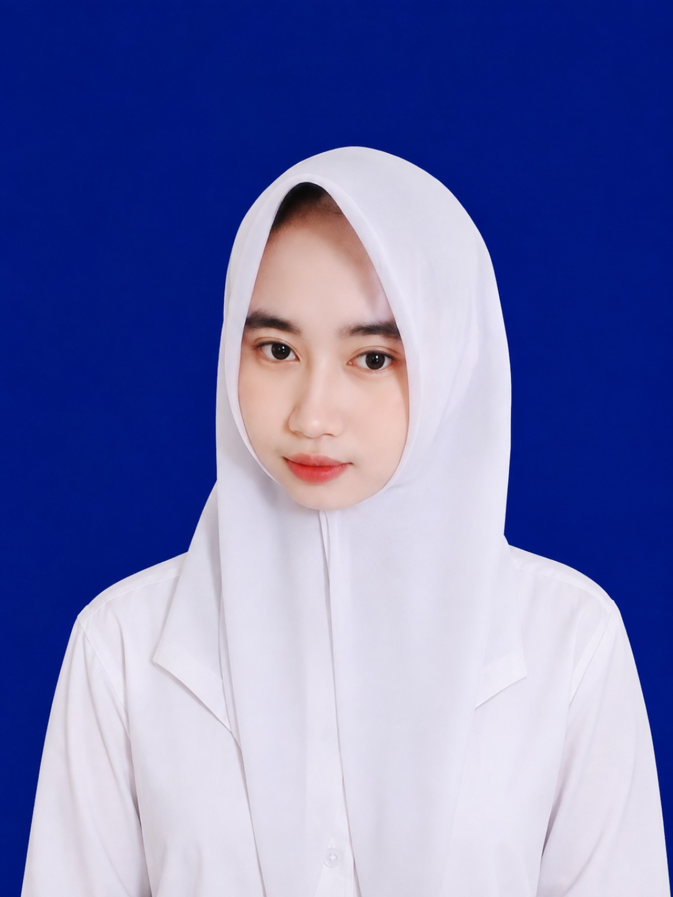

Software Engineering Student
Siswi jurusan Rekayasa Perangkat Lunak (RPL) di SMK Negeri 1 Semparuk. Saya suka membangun tampilan web yang bersih dan gampang dipakai, sambil terus mengasah logika pemrograman.
Saya siswi jurusan Rekayasa Perangkat Lunak (RPL) di SMK Negeri 1 Semparuk dengan ketertarikan pada pengembangan web dan pemecahan masalah lewat logika program.
Saya senang belajar menyusun antarmuka yang bersih, responsif, dan mudah dipakai, sekaligus terus melatih cara berpikir terstruktur sebelum menulis kode.
Saat ini saya masih membangun fondasi: memperkuat dasar-dasar pemrograman lewat proyek-proyek kecil dan terbuka untuk belajar hal baru.
Mempelajari dasar pengembangan web, konsep pemrograman berorientasi objek, serta pengelolaan basis data.
Menempuh pendidikan menengah pertama sekaligus mulai mengenal dasar-dasar teknologi informasi.
Tampilan Web Front-End
Styling & Tata Letak
Interaktivitas Dasar
Konsep & Struktur Data
Framework Aplikasi Web
Pengolahan Data
Dokumentasi & Laporan
Halaman portofolio satu-halaman bergaya glassmorphism, menampilkan profil, riwayat pendidikan, dan proyek secara ringkas dan responsif.
Rangkaian latihan merancang tabel dan relasi data sederhana sebagai bagian dari mata pelajaran basis data di jurusan RPL.
Punya pertanyaan, ide proyek, atau sekadar ingin bertegur sapa? Silakan hubungi saya lewat salah satu tautan di bawah.